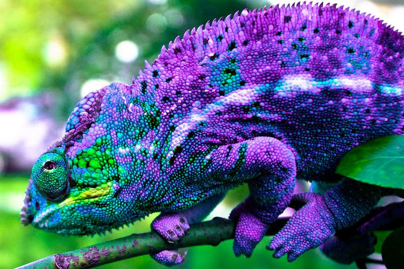
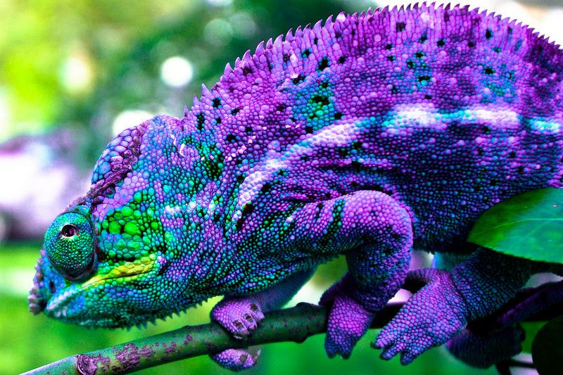
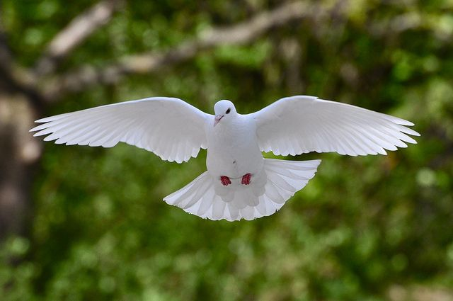
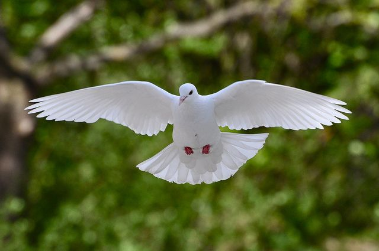
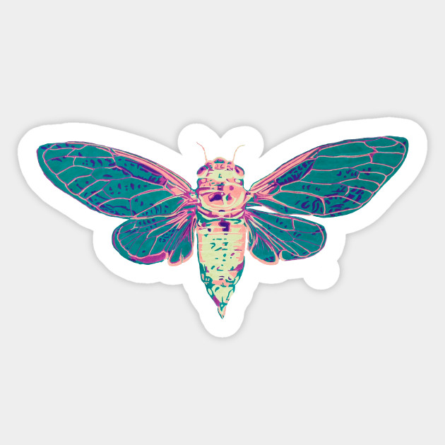
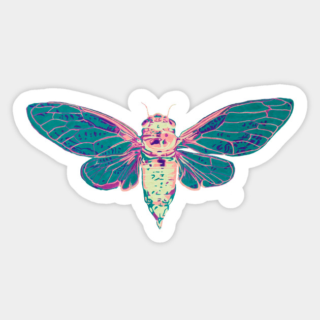

Interesting Facts About Panda
- They have great camouflage for their envoirnment.
- Bamboo is critical to their diet.
- Ocasionally they eat something other than bamboo.
Interesting Facts About Panda

Interesting Facts About Camels
 

Interesting Facts About Chameleon
 

Interesting Facts About Pigeons
 

Interesting Facts About flying-cicada